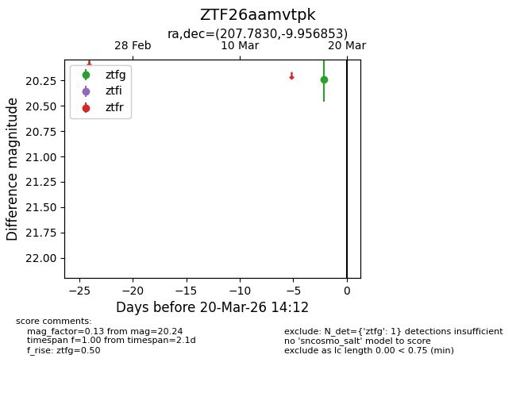
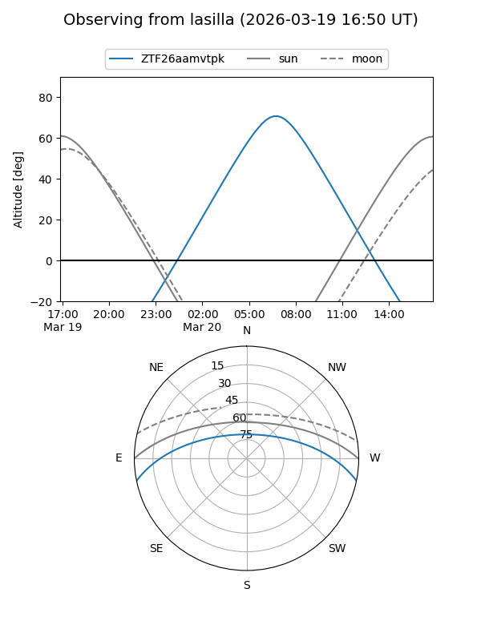
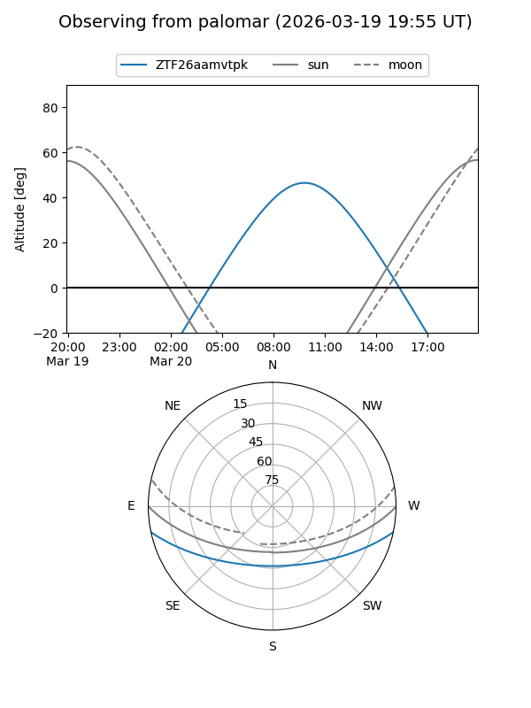

ZTF26aamvtpk
Target ZTF26aamvtpk at 2026-03-20 14:14
Aliases and brokers:
FINK: link
Lasair: link
ALeRCE: link
alt names
ZTF26aamvtpk (ztf,fink_ztf)
Coordinates:
equatorial (ra, dec) = 207.7830,-9.95685
equatorial (HMS+DMS) = 13:51:07.92,-09:57:24.67
galactic (l, b) = (326.2715,+50.19019)
Flags:
Photometry:
last ztfg=20.24
1 ztfg detections
Lightcurve

Visibility


Additional plots